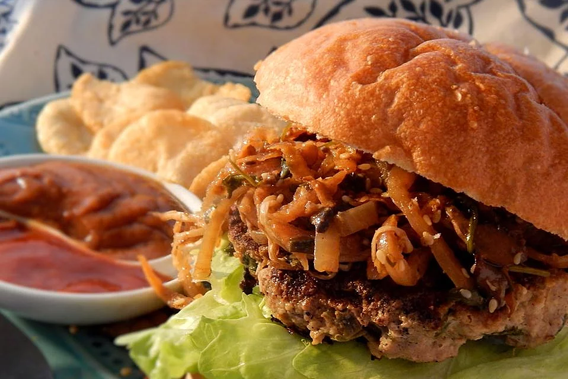

Description
A tasty midweek treat for you.
Ingredients
- 1 egg, beaten
- 2 tablespoons soy sauce
- ⅓ cup minced fresh cilantro
- 2 green onions, thinly sliced
- 1 ½ tablespoons minced fresh ginger, or more to taste
- 2 cloves garlic, minced
- 1 pinch salt and ground black pepper to taste
- 1 pound lean ground turkey
- ⅓ cup bread crumbs
Steps
- Whisk egg and soy sauce together in a bowl; add cilantro, green onions, ginger, garlic, salt, and pepper. Mix turkey and bread crumbs into mixture and mix well; form into 4 patties.
- Heat a large non-stick skillet over medium heat. Place patties in the hot skillet; cover skillet and cook, turning once, until burgers are no longer pink in the center, about 15 minutes. An instant-read thermometer inserted into the center should read at least 165 degrees F (74 degrees C).
Homepage